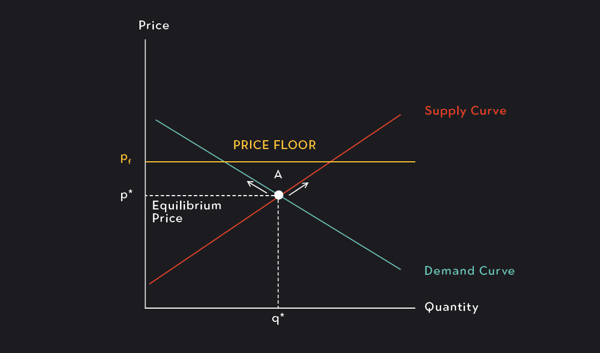

ANG PAGKONTROL NG PRESYO SA PAMILIHAN

Price Control - Ang pagtatadhana ng pamahalaan ng pinakamababa at pinakamataas na presyong maaating itakda sa mga produkto at serbisyo.
R.A 7581 (Price Control Act) - Isang batas na nagbibigay ng proteksyon sa mga konsyumer sa pamamagitan ng pagpapatatag ng mga presyo ng mga pangunahing pangangailangan.
Price Ceiling - Ang PINAKAMATAAS na presyong itinakda ng pamahalaan upang ipagbili ang mga produkto.
- Ito ay isinasagawa ng pamahalaan upang tulungan at bigyang proteksyon ang mga mamimili labas sa mga abusado at mapagsamantalang negosyante.
- Itinatakda ito na mas mababa sa equilibrium price na umiiral sa pamilihan.
Price Support - Ito naman ay isinasagawa para sa mga produsyer upang sila ay makabawas ng gastusin sa produksyon at makamit ang kita.

Floor Price - Ang PINAKAMABABANG presyong itinakda ng pamahalaan upang ipagbili ang mga produkto.
- Itinakda ito na mas mataas sa equilibrium price na umiiral sa pamilihan.